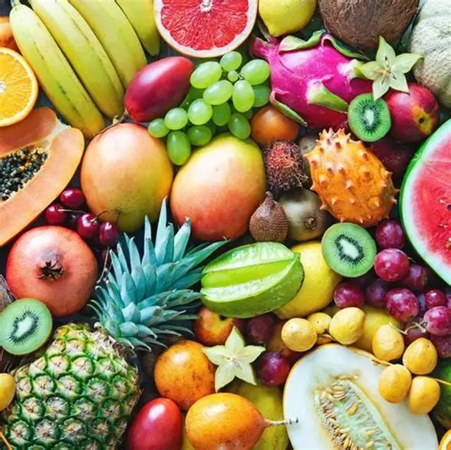

Available Product Categories
Real-time inventory from local farmers directly to retail hubs.



Organic Fruits
Apples, Mangoes, and Citrus.
Stock: 200+ tons availableFresh Vegetables
Spinach, Cabbage, and more.
Market Price: Updated Daily
Premium Wheat
Sharbati and Lokwan varieties.
Source: MP & Punjab Farms
Basmati Rice
Aged long-grain aromatic rice.
Quality: Grade A Export
Root Crops
Potatoes, Onions, and Garlic.
Cold Storage: Available
Other Grains
Bajra, Jowar, and Pulses.
Direct: Farmer to Retailer